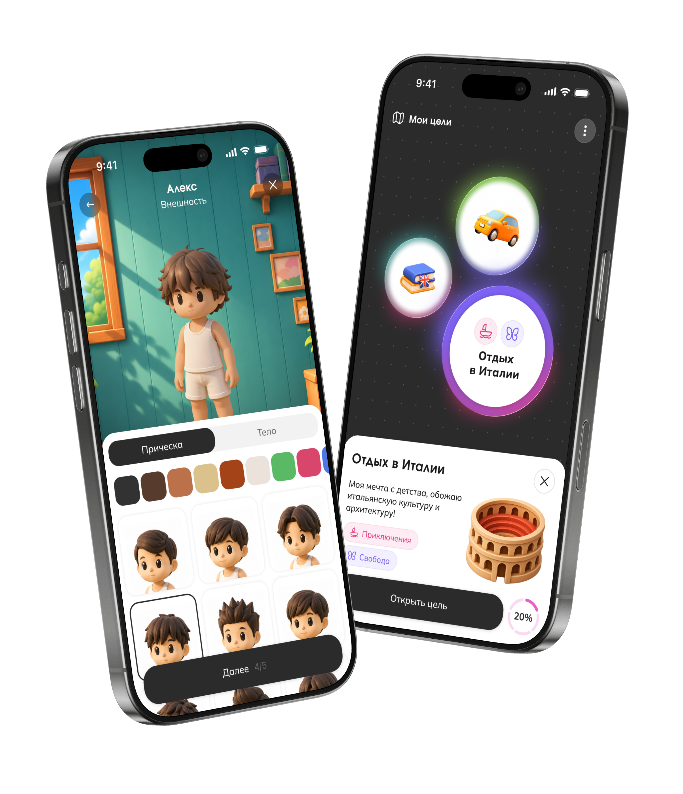
Origin
Gamified life tracker · 2026
A space that helps turn a personal “I want” into the first feasible step.
Problem
Create not a tracker, but a full-fledged space for achieving goals
It can be difficult for people to formulate a personal goal, move from intention to action, and return to plans after a break.
In traditional apps, tasks, habits, and progress numbers quickly become an end in themselves. The connection between daily actions and personal meaning is gradually lost.
Origin combines purpose, personal why, plan, action and reflection into one scenario. The user chooses the load and can adapt the path to changing circumstances.
Young adults with multiple goals at once
The focus of the study is people 20–27 years old who combine work and study, set personal goals and have already tried planners or habit trackers. They do not need control, but help in choosing a priority, starting and returning after a pause.
Highly detailed MVP, not a launched product
The prototype included four key scenarios. Pause, return, social support and a full-fledged AI assistant remained part of the concept. The product metrics below are a post-launch review plan, not actual results.
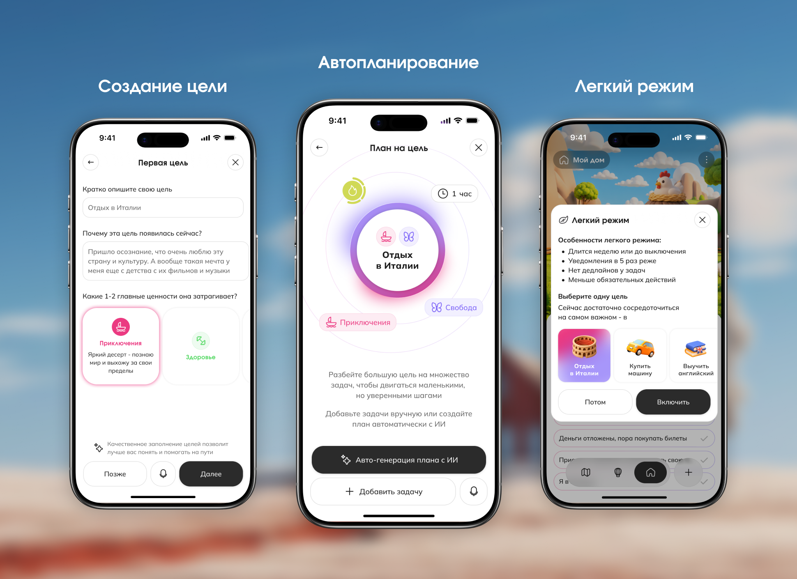
Product hypothesis
If the user connects the goal to a personal “why” and is given the opportunity to choose a small first action, it will be easier for them to move from intention to action.
From problem to solution in MVP
The goal gets lost behind the to-do list
A big plan is intimidating in scale, and individual tasks and habits quickly lose touch with personal meaning.
Meaning and the first step lower the barrier
If a person articulates a personal “why” and sees a small action, it will be easier for him to start and continue.
The goal becomes the center of the scenario
When created, the user records the reason and resources, receives a plan, and then can change the workload and priorities.
Product Metrics
StageMetricaWhat will show
ActivationConversion to creating the first goalDoes the user get through the initial scenario?
First valueFirst action within 24 hoursDoes the product help move from intention to action?
HoldOn the 7th and 30th dayDoes the user return
ReturnResuming after a pauseDoes it help not to give up the path?
ValueSignificant action in a weekIs the person moving towards the chosen goal?
Research
The theory explained motivation, the interview explained actual behavior
Stage 01
Self-determination theory
I started with the Deci & Ryan theory, so as not to reduce motivation to streaks, points and reminders. Three psychological needs provided the framework for the first product hypotheses.
- Autonomy: the person himself chooses the goal and method of movement.
- Competence: sees the result of small real actions.
- Connectivity: receives support without pressure or competition.
Stage 02
Functional market analysis
Compared 25 products on 35 points: goal setting, habits, motivation, reflection, emotional layer, AI and related mechanics.
- Tasks and habits exist separately and are not attached to a goal. There is no connection between actions and meaning.
- Personalization is primarily visual and does not tailor content to each user.
- Streak and rewards support extrinsic motivation, but do not prove real progress.
Opportunity: integrate daily activities around a personal goal and tailor support to the individual's condition.
Stage 03
In-depth interviews
I spoke with eight respondents aged 20–27, most of whom combine work and study. I analyzed specific goals: from the emergence of desire to start, pause and return.
- What triggers the desire for change and helps formulate a personal “why”.
- Why the scale of the goal, perfectionism and lack of deadline prevent you from starting.
- How priorities change, what happens after a breakdown, and whether gamification helps.
Result: 33 user tasks in JTBD format and HMW questions related to specific product capabilities.
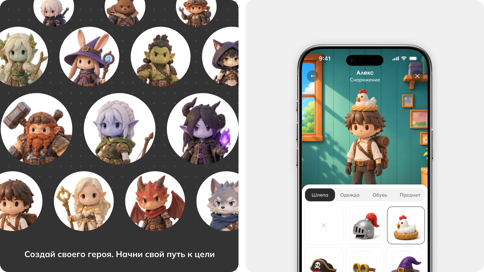
From observations to product
Nine states instead of a linear user path
Finding a goal → ignition → fear → planning → action → frustration → pause → return → finish. The user can be at any point before the goal and we can help.
Instead of a linear CJM, a cyclical model was built of nine dynamic states with back-and-forth transitions between them and without a single “correct” entry point: the user can start the path either by searching for a goal or by planning.
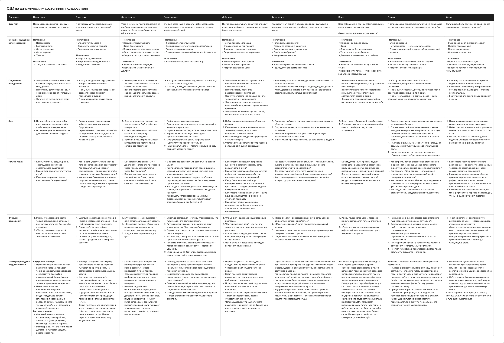
Each of these points received its own function: the first step for 5 minutes, pause mode, completion ritual. The model was not used as an illustration of the “user journey” for the presentation, but as a working tool that directly defined the MVP architecture.
User flow
The scenario changes with the user's situation
At each step, the application checks the context: is there a goal, is there a plan, is there enough energy today. Then it suggests an action, review of the load or a pause.
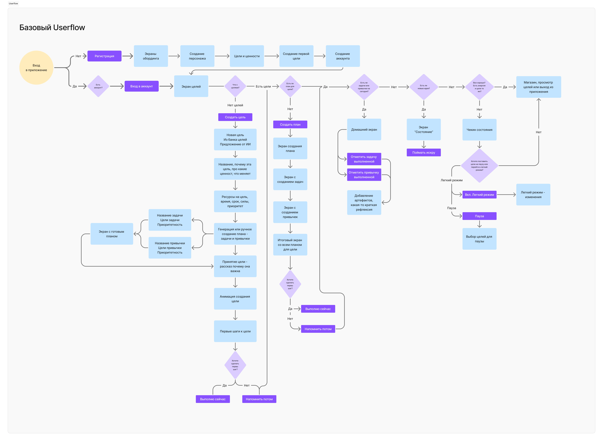
Features of Userflow
Registration after onboarding
To deepen personalization, show value and engage the user before routine registration.
Planning a goal as a flow
To automatically generate a plan, we take into account the circumstances, resources and meaning of the goal. This way, value is preserved and the plan becomes more accurate.
Goals are the core of the application
Tasks and habits become small steps towards a goal: progress is felt more clearly, important actions remain visible, and one action can support several goals at once.
Easy mode and pause
Motivation and resources are not always enough. The app notices a decrease in activity and suggests changing priorities or reducing workload without feeling guilty.
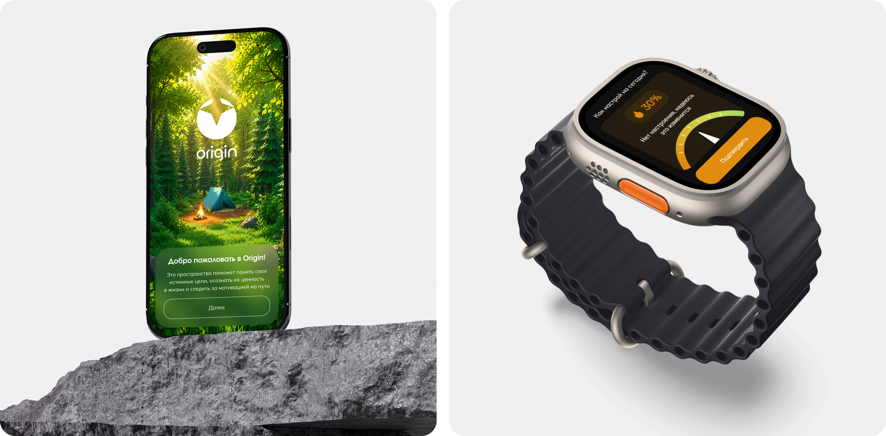
Visual direction
Emotional layer + minimalistic interface
3D objects and illustrations, gradients and colors allow the user to personalize their space.
Components and monochrome colors give function and space for emotional content.
This approach allows you to deeply personalize the experience of each user: the emotional layer can be customized, but the UX basis remains the same. This increases engagement and retention, and also creates the opportunity to monetize interface customization.
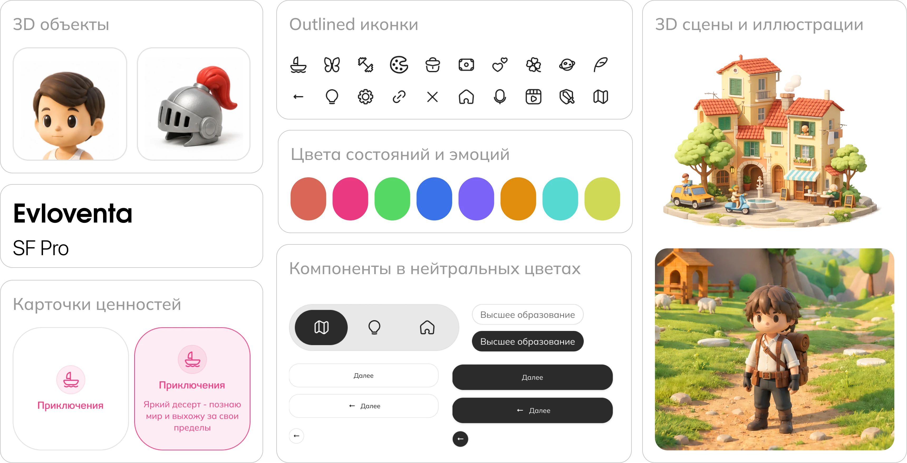
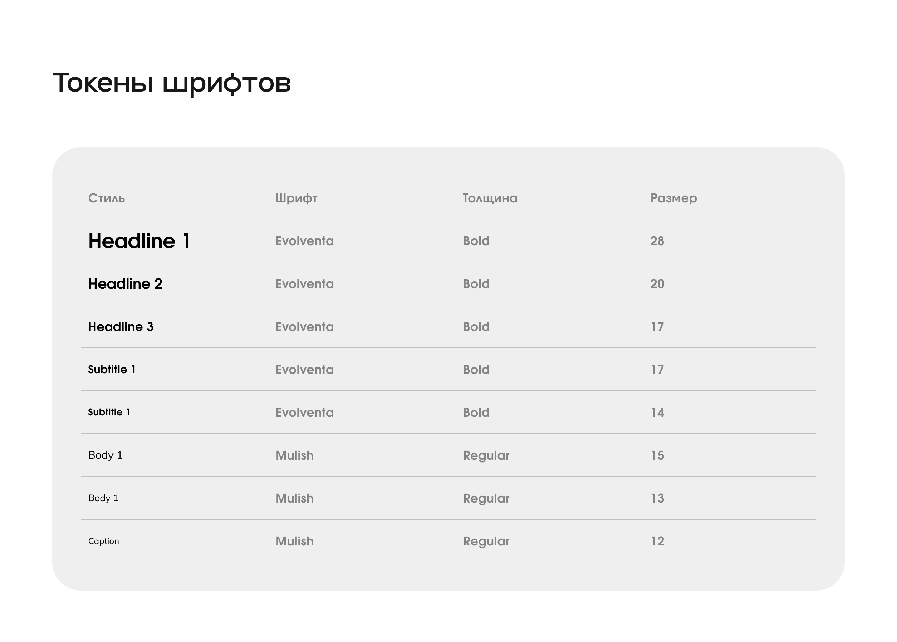
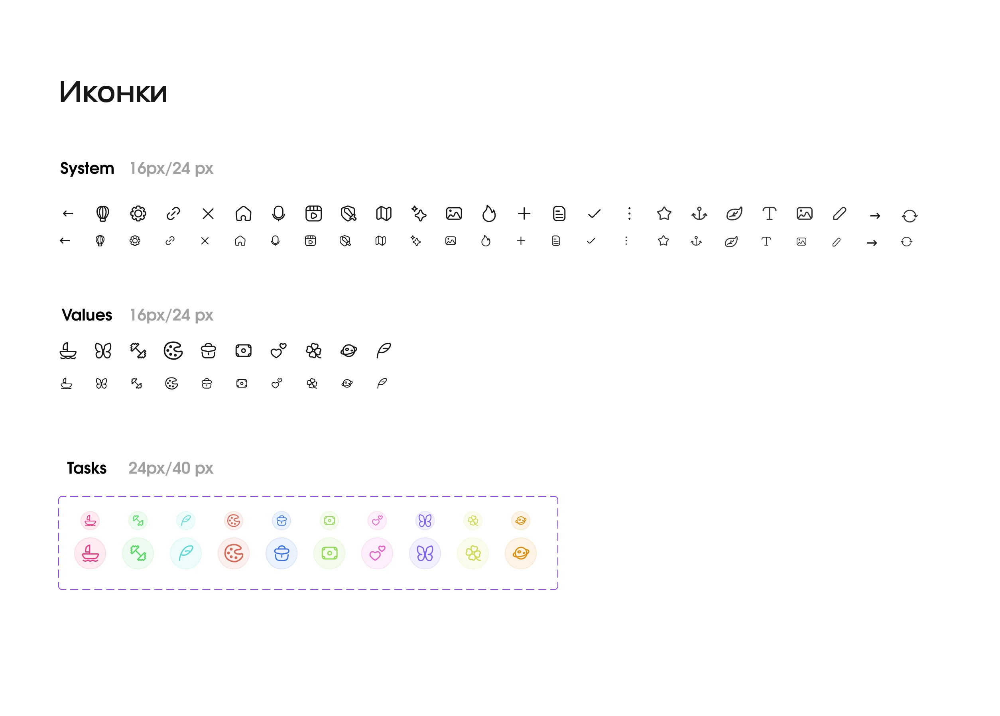
Four scenarios: from introduction to daily adaptation
01
Onboarding and the first goal
Introducing the app idea, creating a character, and moving on to a personal goal.
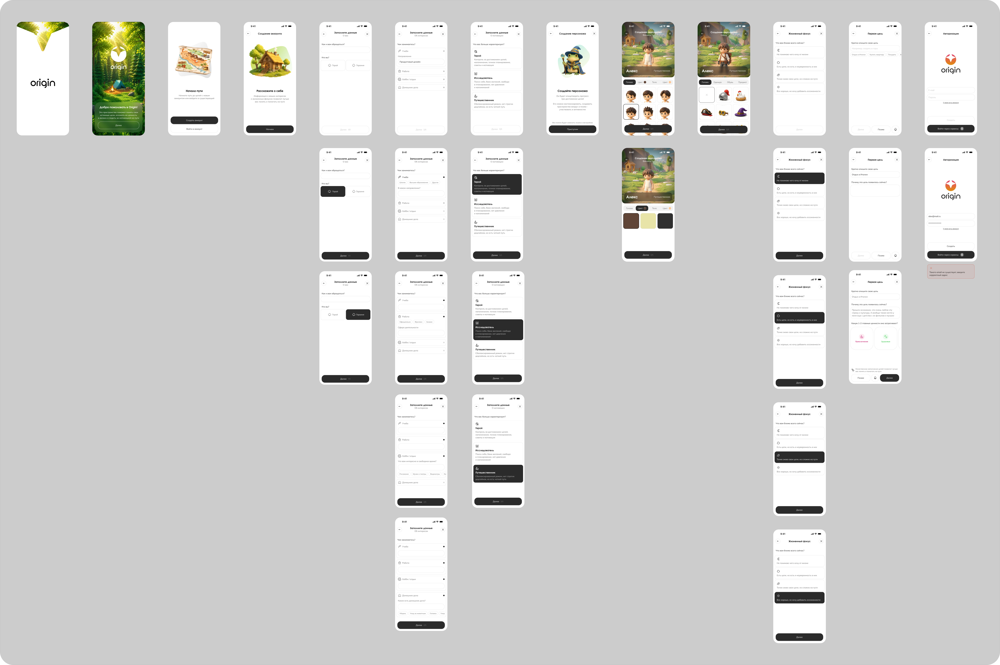
Earlier interface version — the visual design is being updated.
02
Creating a Goal
A person records his personal “why,” resources, and the first feasible action.
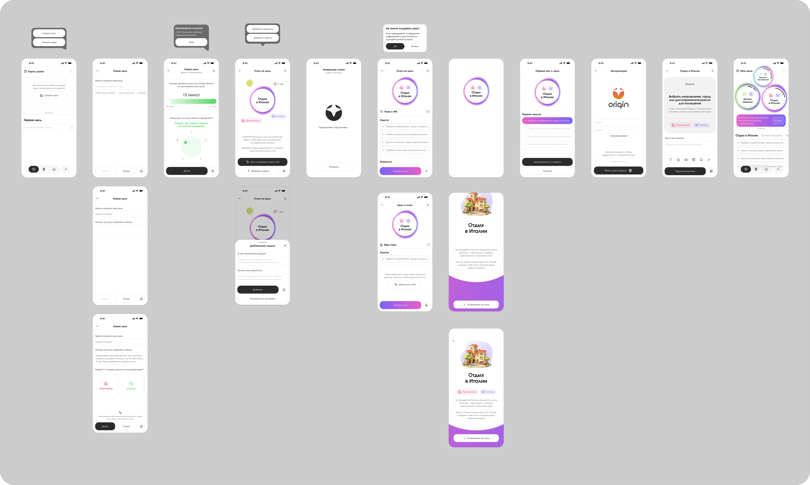
Earlier interface version — the visual design is being updated.
03
State check-in
The user reports how they feel and chooses a manageable workload.
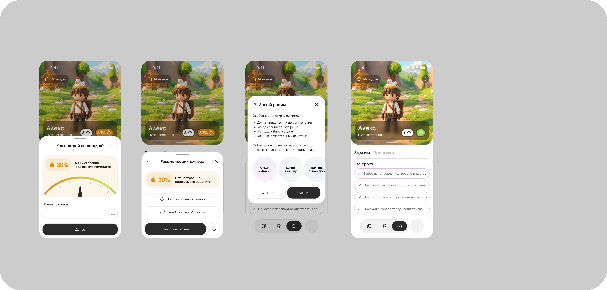
Earlier interface version — the visual design is being updated.
04
Revisiting priorities
Focus can be changed without losing goals and path traveled.
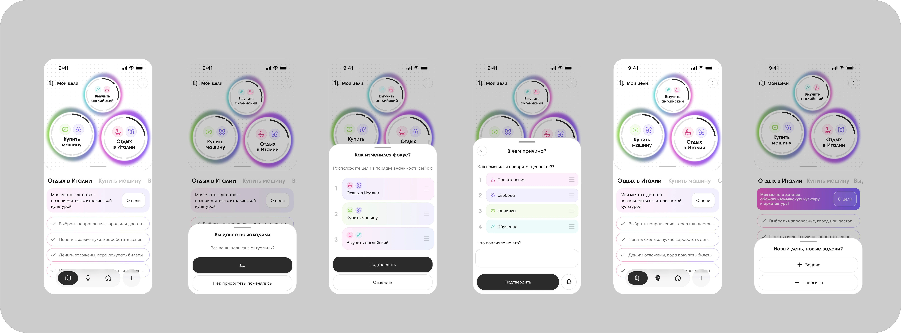
Earlier interface version — the visual design is being updated.
Usability testing: onboarding and goal creation
Set your first goal
The respondent gets acquainted with the application, goes through onboarding, formulates a goal and adds the first steps to it.
- 4 questions with rating scale
- 2 open questions
Ratings
4,4/5Navigation 4,7/5Understanding the concept 4,4/5Comfort in time 7,9/10Desire to use
Usability
After completing a task on Pathway, the user rated the app's usability and other features. The results show that the script is clear, navigation is easy, and interaction is effortless.
Validate the product with real users
Activation funnel
The main test after launch is not the number of opens or check-ins, but the transition from intention to the first significant action. At each step of the funnel, you can see where the product is losing users.
- 01Started onboarding
- 02Registration
- 03Created the first goal
- 04Selected the first action
- 05Performed an actionMoment of activation
- 06Moved to the next action
Activation point:
The user performed the first pre-selected action associated with a specific goal.
A/B
Dive versus speed
A/B tests for creating goals. In one version - hints and immersion in the awareness of the goal. In another - the speed of goal creation.
Main indicatorNumber of actions per goal in 7 days
- Completing onboarding
- Creating the first goal
- Selecting the first action
- Performing an action
- Changing priorities
- Return after a break
Monetization via freemium model
Basic path to the goal
- Creating three goals
- Unlimited tasks and habits
- Basic customization
- 1 request for AI analytics
- 2 trial auto-generation plans
Complete immersion in self-development
- Unlimited number of goals
- Automatic plan generation for each goal
- Customization and gifts
- Voice filling of fields
- Weekly AI insights
- Communication with a companion about goals and self-development
Let users experience value before upgrading
- Free accounts receive the product's core value
- Trial feature activations introduce the benefits of a paid plan
- Customization adds an appealing premium layer for every user
Multiple monetization channels
Subscription opens up advanced scenarios and analytics, and customization creates an additional revenue channel without limiting the basic value of the product.
Through theory and research to a unique product
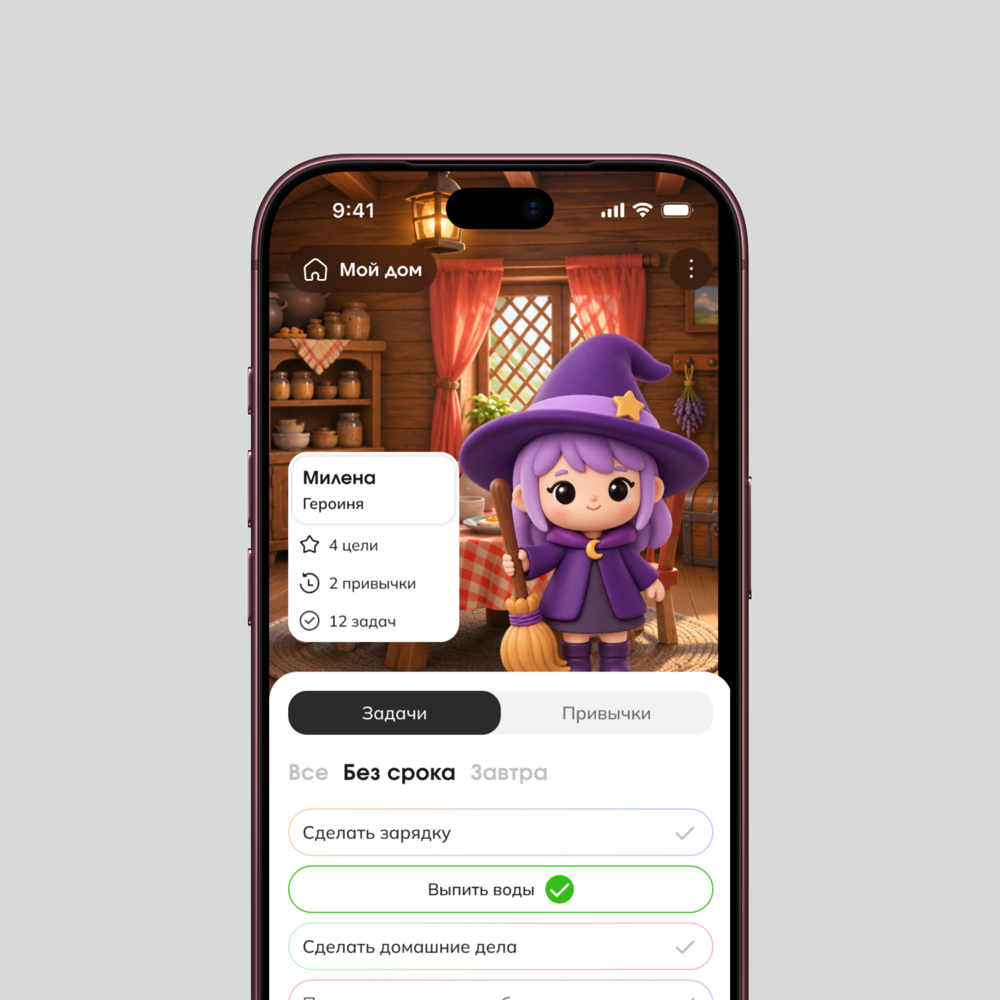
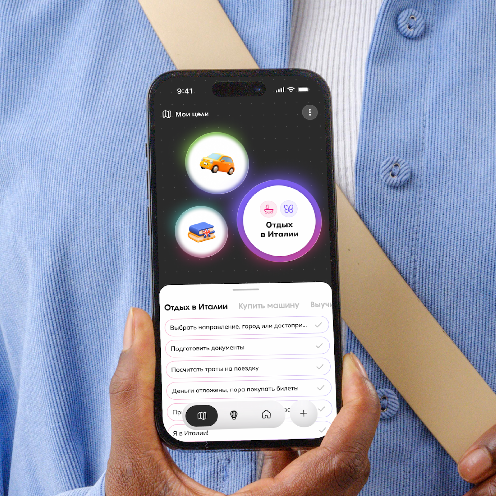
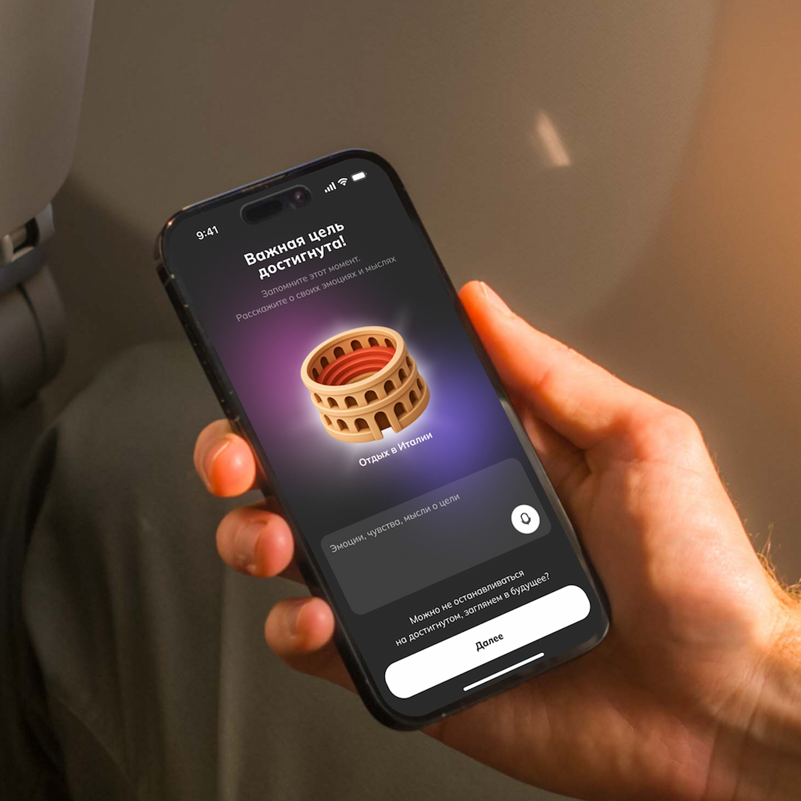
Main conclusion
Correct hypotheses produce the most valuable results. The product turns out to be bold, stands out among competitors and really solves the pain of users. State model, personalization through gamification, understanding of goals and flexibility of motivation - all this made the product come alive.
Research became MVP architecture
Motivation theory, analysis of 25 products, and 8 interviews resulted in four key scenarios. The clarity of onboarding and goal creation was tested with 13 participants.
A focused end-to-end prototype
Build a working “goal → first action → completion” flow, instrument the key events, and only then test AI guidance, pause mode, and social support.